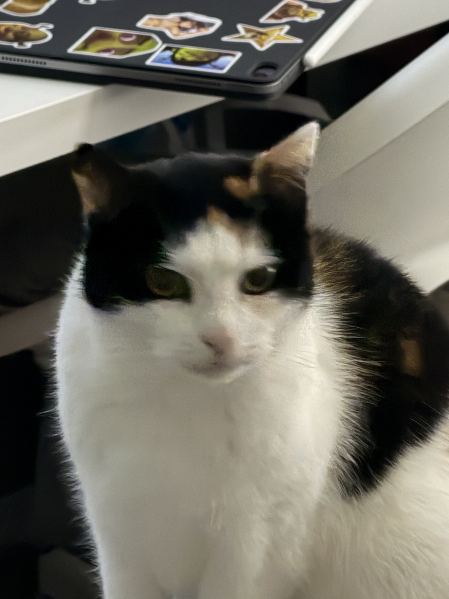

Hei, jeg heter Oleksandr!
Jeg heter Oleksandr Viller og er elev. Jeg synes det er gøy å lære om data og programmering, og denne siden er en del av det jeg lærer på skolen. Når jeg ikke sitter foran skjermen, tilbringer jeg tid med katten min, Pusi.

Fakta om meg
| Hva | Svar |
|---|---|
| Navn | Oleksandr Viller |
| Interesse | Programmering |
| Kjæledyr | Katten Pusi |
| Dette jobber jeg med nå | Min første nettside |
Favorittsitat
Talk is cheap. Show me the code.